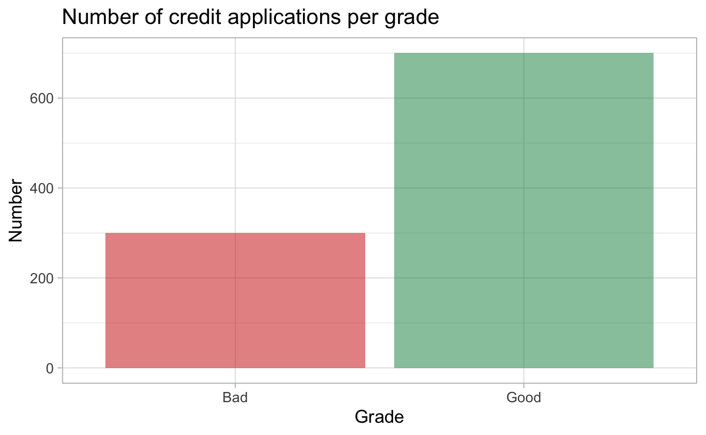

Chapter 3 Models
After the exploration of our data, we start with the modelling part.
3.1 Splitting strategies
In order to test the performance of our models, we use a splitting strategy of the dataset:
- 80% is used as a training set
- The remaining 20% is used as a test set.
3.2 Balance the dataset
As said in the exploratory data analysis, we notice that our data is heavily unbalanced. We need to balance it before fitting our model.
3.3 Logistic Regression
We fit a logistic regression to test if it could predict the output we desired.
For our first model we’ll select all the variables given in the German Credit data set.
Our initial model is therefore:
\[ z_i = a_o + a_1{CHKACCT}_{31i} + ... + a_{31}Foreign_{31i} \]
Selection of the model
Final model:
\[ z_i = a_o + a_1{CHKACCT}_{1i} + a_2{DURATION}_{2i} + a_3{HISTORY}_{3i} + a_4{NEWCAR}_{4i} + a_4{USEDCAR}_{4i} + a_5{AMOUNT}_{5i} + a_6{SAVACCT}_{6i} + a_7{EMPLOYMENT}_{7i} + a_8{INSTALLRATE}_{8i} + a_9{MALSINGLE}_{9i} + a_10{CO-APPLICANT}_{10i} + a_11{GUARANTOR}_{11i} + a_12{REALESTATE}_{12i} + a_13{OTHERINSTALL}_{13i} + a_14{OWNRES}_{14i} + a_15{NUMCREDITS}_{15i} + a_16{NUMDEPENDENTS}_{16i} + a_17{FOREIGN}_{17i} \] Predictions:
Not a good model. Do not forget that the prior of this data set is not balanced at all. We should take it into account.
As depicted below, if our model was good, we should have boxplot that are far away from the 0.5, which is not the case, especially for the bad credits.

3.4 Neural Networks
#> # weights: 65
#> initial value 328.042130
#> final value 327.165469
#> converged
#> a 30-2-1 network with 65 weights
#> options were - entropy fitting
#> b->h1 i1->h1 i2->h1 i3->h1 i4->h1 i5->h1 i6->h1 i7->h1
#> -0.21 -0.20 0.09 0.08 -0.13 0.13 0.05 -0.53
#> i8->h1 i9->h1 i10->h1 i11->h1 i12->h1 i13->h1 i14->h1 i15->h1
#> -0.67 0.64 -0.43 -0.59 -0.68 -0.20 -0.25 -0.61
#> i16->h1 i17->h1 i18->h1 i19->h1 i20->h1 i21->h1 i22->h1 i23->h1
#> 0.12 -0.03 0.09 -0.02 -0.27 -0.35 -0.01 -0.36
#> i24->h1 i25->h1 i26->h1 i27->h1 i28->h1 i29->h1 i30->h1
#> -0.18 -0.60 -0.60 -0.48 0.22 0.61 -0.51
#> b->h2 i1->h2 i2->h2 i3->h2 i4->h2 i5->h2 i6->h2 i7->h2
#> 0.16 0.64 0.70 0.11 -0.09 -0.28 -0.58 -0.17
#> i8->h2 i9->h2 i10->h2 i11->h2 i12->h2 i13->h2 i14->h2 i15->h2
#> 0.48 -0.70 -0.35 -0.20 -0.19 -0.36 0.39 0.10
#> i16->h2 i17->h2 i18->h2 i19->h2 i20->h2 i21->h2 i22->h2 i23->h2
#> -0.15 -0.50 0.33 0.01 0.55 -0.41 0.43 0.54
#> i24->h2 i25->h2 i26->h2 i27->h2 i28->h2 i29->h2 i30->h2
#> 0.11 0.59 0.11 0.07 -0.05 0.62 0.36
#> b->o h1->o h2->o
#> 0.00 0.55 -0.29
#> [1] 0.53.5 Trees


#> Obs
#> Pred 0 1
#> 0 42 48
#> 1 22 88
#> 0 1
#> 1 0.257 0.743
#> 2 0.683 0.317
#> 3 0.683 0.317
#> 4 0.343 0.657
#> 5 0.683 0.317
#> 6 0.683 0.317
#> 7 0.257 0.743
#> 8 0.257 0.743
#> 9 0.683 0.317
#> 10 0.683 0.317
#> 11 0.257 0.743
#> 12 0.257 0.743
#> 13 0.683 0.317
#> 14 0.683 0.317
#> 15 0.257 0.743
#> 16 0.683 0.317
#> 17 0.683 0.317
#> 18 0.683 0.317
#> 19 0.257 0.743
#> 20 0.343 0.657
#> 21 0.683 0.317
#> 22 0.683 0.317
#> 23 0.683 0.317
#> 24 0.257 0.743
#> 25 0.257 0.743
#> 26 0.257 0.743
#> 27 0.683 0.317
#> 28 0.257 0.743
#> 29 0.683 0.317
#> 30 0.683 0.317
#> 31 0.257 0.743
#> 32 0.257 0.743
#> 33 0.683 0.317
#> 34 0.257 0.743
#> 35 0.257 0.743
#> 36 0.343 0.657
#> 37 0.683 0.317
#> 38 0.257 0.743
#> 39 0.343 0.657
#> 40 0.257 0.743
#> 41 0.683 0.317
#> 42 0.683 0.317
#> 43 0.257 0.743
#> 44 0.683 0.317
#> 45 0.257 0.743
#> 46 0.257 0.743
#> 47 0.257 0.743
#> 48 0.343 0.657
#> 49 0.683 0.317
#> 50 0.257 0.743
#> 51 0.257 0.743
#> 52 0.683 0.317
#> 53 0.257 0.743
#> 54 0.257 0.743
#> 55 0.257 0.743
#> 56 0.257 0.743
#> 57 0.683 0.317
#> 58 0.683 0.317
#> 59 0.257 0.743
#> 60 0.257 0.743
#> 61 0.683 0.317
#> 62 0.257 0.743
#> 63 0.257 0.743
#> 64 0.257 0.743
#> 65 0.683 0.317
#> 66 0.683 0.317
#> 67 0.683 0.317
#> 68 0.683 0.317
#> 69 0.683 0.317
#> 70 0.683 0.317
#> 71 0.257 0.743
#> 72 0.257 0.743
#> 73 0.683 0.317
#> 74 0.683 0.317
#> 75 0.257 0.743
#> 76 0.343 0.657
#> 77 0.257 0.743
#> 78 0.683 0.317
#> 79 0.257 0.743
#> 80 0.683 0.317
#> 81 0.257 0.743
#> 82 0.257 0.743
#> 83 0.683 0.317
#> 84 0.683 0.317
#> 85 0.683 0.317
#> 86 0.683 0.317
#> 87 0.343 0.657
#> 88 0.683 0.317
#> 89 0.257 0.743
#> 90 0.683 0.317
#> 91 0.257 0.743
#> 92 0.257 0.743
#> 93 0.257 0.743
#> 94 0.257 0.743
#> 95 0.683 0.317
#> 96 0.257 0.743
#> 97 0.683 0.317
#> 98 0.257 0.743
#> 99 0.343 0.657
#> 100 0.257 0.743
#> 101 0.257 0.743
#> 102 0.343 0.657
#> 103 0.257 0.743
#> 104 0.343 0.657
#> 105 0.257 0.743
#> 106 0.683 0.317
#> 107 0.257 0.743
#> 108 0.343 0.657
#> 109 0.683 0.317
#> 110 0.257 0.743
#> 111 0.683 0.317
#> 112 0.257 0.743
#> 113 0.343 0.657
#> 114 0.683 0.317
#> 115 0.257 0.743
#> 116 0.683 0.317
#> 117 0.683 0.317
#> 118 0.257 0.743
#> 119 0.343 0.657
#> 120 0.683 0.317
#> 121 0.683 0.317
#> 122 0.683 0.317
#> 123 0.343 0.657
#> 124 0.343 0.657
#> 125 0.257 0.743
#> 126 0.683 0.317
#> 127 0.683 0.317
#> 128 0.683 0.317
#> 129 0.343 0.657
#> 130 0.257 0.743
#> 131 0.257 0.743
#> 132 0.257 0.743
#> 133 0.257 0.743
#> 134 0.683 0.317
#> 135 0.683 0.317
#> 136 0.257 0.743
#> 137 0.257 0.743
#> 138 0.257 0.743
#> 139 0.683 0.317
#> 140 0.257 0.743
#> 141 0.257 0.743
#> 142 0.257 0.743
#> 143 0.257 0.743
#> 144 0.257 0.743
#> 145 0.257 0.743
#> 146 0.683 0.317
#> 147 0.683 0.317
#> 148 0.683 0.317
#> 149 0.257 0.743
#> 150 0.683 0.317
#> 151 0.257 0.743
#> 152 0.683 0.317
#> 153 0.257 0.743
#> 154 0.257 0.743
#> 155 0.683 0.317
#> 156 0.683 0.317
#> 157 0.683 0.317
#> 158 0.343 0.657
#> 159 0.683 0.317
#> 160 0.683 0.317
#> 161 0.683 0.317
#> 162 0.683 0.317
#> 163 0.683 0.317
#> 164 0.257 0.743
#> 165 0.683 0.317
#> 166 0.257 0.743
#> 167 0.257 0.743
#> 168 0.683 0.317
#> 169 0.257 0.743
#> 170 0.683 0.317
#> 171 0.683 0.317
#> 172 0.257 0.743
#> 173 0.343 0.657
#> 174 0.257 0.743
#> 175 0.257 0.743
#> 176 0.683 0.317
#> 177 0.257 0.743
#> 178 0.257 0.743
#> 179 0.257 0.743
#> 180 0.683 0.317
#> 181 0.683 0.317
#> 182 0.683 0.317
#> 183 0.683 0.317
#> 184 0.343 0.657
#> 185 0.343 0.657
#> 186 0.683 0.317
#> 187 0.257 0.743
#> 188 0.257 0.743
#> 189 0.683 0.317
#> 190 0.683 0.317
#> 191 0.683 0.317
#> 192 0.257 0.743
#> 193 0.683 0.317
#> 194 0.257 0.743
#> 195 0.257 0.743
#> 196 0.257 0.743
#> 197 0.683 0.317
#> 198 0.683 0.317
#> 199 0.257 0.743
#> 200 0.683 0.317